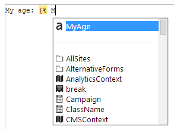

Adding custom macro fields
Fields (properties) allow users to load values in macro expressions. Field values can be of any supported type, from simple scalar types (strings, numbers) to objects and collections. The macro engine supports fields both as members of objects or namespaces, and as independent values.
The system provides two different ways to add your own macro fields:
Registering fields into macro resolvers
Macro resolvers are system components that ensure the processing of macros. The resolvers are organized in a hierarchy that allows child resolvers to inherit all macro options from the parent. The Global resolver is the parent of all other resolvers in the system. By adding fields into the global resolver, you create new macros that are available in all parts of the system.
To add custom macro fields, you need to register data sources into resolvers:
Named sources
Use named macro sources to directly register objects or scalar values into resolvers. Named sources appear in the macro autocomplete help and macro tree.
Call the SetNamedSourceData method for a resolver object, with the following parameters:
A string that sets the name of the macro field (used in macro syntax).
The object that the system returns when resolving the field in macro expressions.
(Optional) By default, the registered fields appear in the high priority section of the autocomplete help and macro tree. To add namespaces with normal priority, add false as the third parameter.
using CMS.MacroEngine;using CMS.Membership;...// Registers macro fields into the global resolverMacroContext.GlobalResolver.SetNamedSourceData("MacroField", "RESOLVED Value 1");MacroContext.GlobalResolver.SetNamedSourceData("MyUser", UserInfoProvider.GetUserInfo("administrator"));Users can work with the new macros in any part of the system that uses the given macro resolver. If the field's value is an object containing additional fields, you always need to access the fields as members of the object itself. For example:
The name of my user in upper case is: {% MyUser.UserName.ToUpper() %}First eight characters of the MacroField value: {% MacroField.Substring(0, 8) %}Named callback sources
You can define macro fields that use a callback method to get the value. This approach allows you to calculate the field's value in a separate method.
Call the SetNamedSourceDataCallback method for a resolver object with the following parameters:
A string that sets the name of the macro field (used in macro syntax).
The name of the callback method.
(Optional) By default, the registered fields appear in the high priority section of the autocomplete help and macro tree. To add namespaces with normal priority, add false as the third parameter.
using CMS.MacroEngine;...// Registers a single macro field, with the value processed using a callback methodMacroContext.GlobalResolver.SetNamedSourceDataCallback("CallbackField", MacroFieldEvaluator);...// Callback method that provides the value of the 'CallbackField' macro fieldprivate object MacroFieldEvaluator(EvaluationContext context){ // Returns the result of the macro. // The example is only a demonstration of the basic principles. The method can be as complex as required. return "Macro return value";}Users can work with the new macros in any part of the system that uses the given macro resolver. For example: {% CallbackField %}
Note: The system executes the callback for every occurrence of the custom macro. If the evaluator method contains any computationally intensive logic, we recommend implementing a caching mechanism for the result to optimize performance.
Anonymous sources
When you register an object as an anonymous macro source, users can access the object's data fields, but not the object itself.
Call the AddAnonymousSourceData method for a resolver object, with the appropriate data object as the parameter (for example a DataRow).
using CMS.MacroEngine;...// Prepares sample data in a DataRowDataTable table = new DataTable();table.Columns.Add("Field1", typeof(string));table.Columns.Add("Field2", typeof(string));table.Columns.Add("Field3", typeof(int));table.Rows.Add("Value1", "Value2", 42);// Registers the data into the global resolver as an anonymous sourceMacroContext.GlobalResolver.AddAnonymousSourceData(table.Rows[0]);In macro expressions, users can access the data fields (columns) inside the anonymous source, without referring to the actual registered object.
{% Field1 %}{% Field2 %}{% Field3 %}Data fields registered through an anonymous macro source are resolved normally by the system, but do NOT appear in the macro autocomplete help.
Note: Macro resolver objects also have SetAnonymousSourceData method, which works the same way as AddAnonymousSourceData, but also directly replaces any other anonymous sources registered into the given resolver. Do NOT call the SetAnonymousSourceData method for the GlobalResolver.
Example - Adding custom macros to the global resolver
The following example demonstrates how to add a custom field to the global macro resolver. The global resolver is the parent of all other resolvers. Macro fields that you add into the global resolver become available in all parts of the system. The sample macro uses a callback method to calculate the age of the current user.
Open your web project in Visual Studio.
Create a custom module class.
Either add the class into a custom project within the Kentico solution (recommended) or directly into the Kentico web project (into the CMSApp project for web application installations, into the App_Code folder for web site installations).
For basic execution of initialization code, you only need to register a "code-only" module through the API. You do NOT need to create a new module within the Modules application in the Kentico administration interface.
Override the module's OnInit method and call the SetNamedSourceDataCallback method for the GlobalResolver.
Define the callback method.
usingSystem;usingCMS;usingCMS.Base;usingCMS.DataEngine;usingCMS.MacroEngine;usingCMS.Membership;// Registers the custom module into the system[assembly: RegisterModule(typeof(CustomMacroModule))]publicclassCustomMacroModule : Module{// Module class constructor, the system registers the module under the name "CustomMacros"publicCustomMacroModule():base("CustomMacros"){}// Contains initialization code that is executed when the application startsprotectedoverridevoidOnInit(){base.OnInit();// Adds the 'MyAge' field to the global macro resolverMacroContext.GlobalResolver.SetNamedSourceDataCallback("MyAge", MyAgeEvaluator);}// Callback method that defines the result of the 'MyAge' macro fieldprivateobjectMyAgeEvaluator(EvaluationContext context){// Gets the birth date of the current userDateTime dateOfBirth = MembershipContext.AuthenticatedUser.UserSettings.UserDateOfBirth;if(dateOfBirth == DateTime.MinValue){return"Date of birth is unknown.";}DateTime now = DateTime.Now;// Calculates the basic difference in yearsintage = now.Year - dateOfBirth.Year;// Subtracts one year if the current user's birthday has not occurred yet this yearif(dateOfBirth.AddYears(age) > now){age--;}returnage;}}Save the class. On web application installations, build the solution.
You can now try entering the {% MyAge %} expression in any part of the system where macros are supported. The macro autocomplete help automatically offers the custom field in the high priority section.

'MyAge' field appearing in the autocomplete help when writing macros
Adding custom macro fields to existing object types
The macro engine allows you to add static fields to existing object types or macro namespaces.
Start by defining your fields inside a container class:
Open your project in Visual Studio.
Create a new class. In web site projects, you can either add the class into the App_Code folder or as part of a custom assembly.
Make the class inherit from MacroFieldContainer.
Override the RegisterFields method.
Call RegisterField to define your custom fields.
usingCMS.MacroEngine;usingCMS.Membership;publicclassCustomMacroFields : MacroFieldContainer{protectedoverridevoidRegisterFields(){base.RegisterFields();// Defines a custom macro field in the containerRegisterField(newMacroField("MyUser", () => UserInfoProvider.GetUserInfo("administrator")));}}The RegisterFields method accepts a MacroField parameter. Specify the following information for each macro field:
The field's name (used in macro syntax).
The value of the field. Define the value using a lambda expression.
Register your macro field container class by extending an object type or macro namespace.
Add a RegisterExtension assembly attribute above the class declaration for each type that you wish to extend (requires a reference to the CMS namespace).
Specify the type parameters for the RegisterExtension attribute in the following format:
[assembly: RegisterExtension(typeof(<macro field container class>), typeof(<extended type>))]
You can extend the following types:
General system types (string, int, ...)
Kentico API object types (UserInfo, TreeNode, ...)
Macro namespaces (SystemNamespace, StringNamespace, MathNamespace, ...)
Custom types
using CMS;using CMS.MacroEngine;using CMS.Membership;// Registers fields from the 'CustomMacroFields' container into the "System" macro namespace[assembly: RegisterExtension(typeof(CustomMacroFields), typeof(SystemNamespace))]public class CustomMacroFields : MacroFieldContainer{...The attribute registers your custom field container class. You can access the field's value in macro expressions as a member of the extended object type or namespace.
Important: If your macro field container class is defined within a custom assembly, the assembly project must contain the [assembly: AssemblyDiscoverable] attribute (the recommended location is in the Properties/AssemblyInfo.cs file). To use the attribute, your assembly's project must contain a reference to the CMS.Core.dll library.